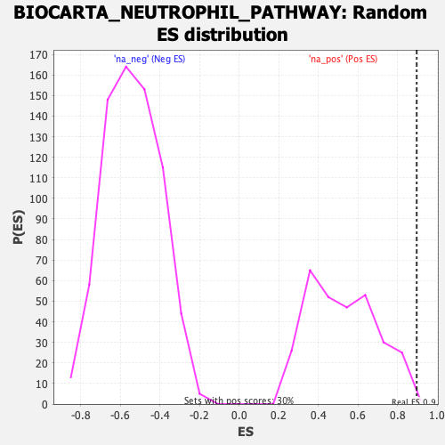

| | | Dataset | DE_genes |
| Phenotype | NoPhenotypeAvailable |
| Upregulated in class | na_pos |
| GeneSet | BIOCARTA_NEUTROPHIL_PATHWAY |
| Enrichment Score (ES) | 0.89632463 |
| Normalized Enrichment Score (NES) | 1.7115767 |
| Nominal p-value | 0.006666667 |
| FDR q-value | 0.1428744 |
| FWER p-Value | 0.61 |
Table: GSEA Results Summary
 Fig 1: Enrichment plot: BIOCARTA_NEUTROPHIL_PATHWAY
Fig 1: Enrichment plot: BIOCARTA_NEUTROPHIL_PATHWAY
Profile of the Running ES Score & Positions of GeneSet Members on the Rank Ordered List
| PROBE | GENE SYMBOL | GENE_TITLE | RANK IN GENE LIST | RANK METRIC SCORE | RUNNING ES | CORE ENRICHMENT | | 1 | SELL | | | 0 | 21.201 | 0.8963 | Yes |
| 2 | ITGAM | | | 1010 | 0.840 | 0.8666 | No |
| 3 | SELE | | | 1867 | 0.363 | 0.8266 | No |
| 4 | ICAM1 | | | 2366 | 0.229 | 0.8041 | No |
| 5 | CD44 | | | 2804 | 0.161 | 0.7826 | No |
| 6 | ITGB2 | | | 3683 | 0.088 | 0.7295 | No |
| 7 | ITGAL | | | 5967 | -0.037 | 0.5834 | No |
| 8 | PECAM1 | | | 11663 | -0.735 | 0.2462 | No |
Table: GSEA details [plain text format]

Fig 2: BIOCARTA_NEUTROPHIL_PATHWAY: Random ES distribution
Gene set null distribution of ES for BIOCARTA_NEUTROPHIL_PATHWAY